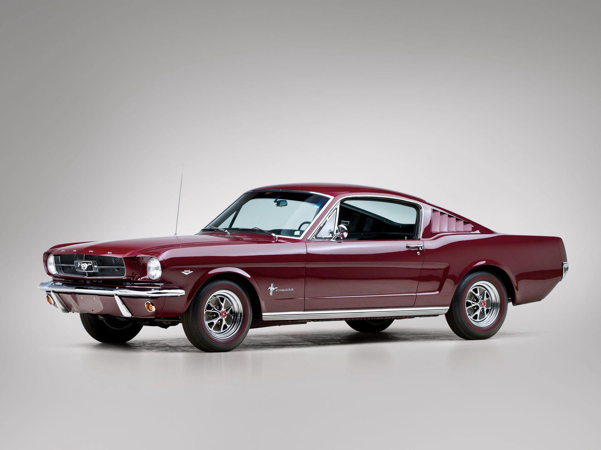
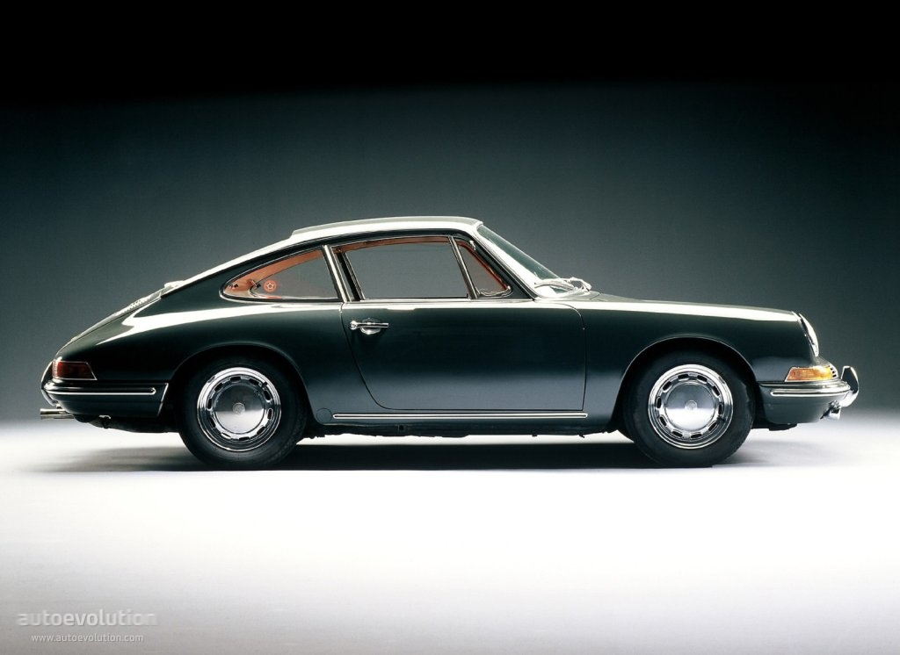
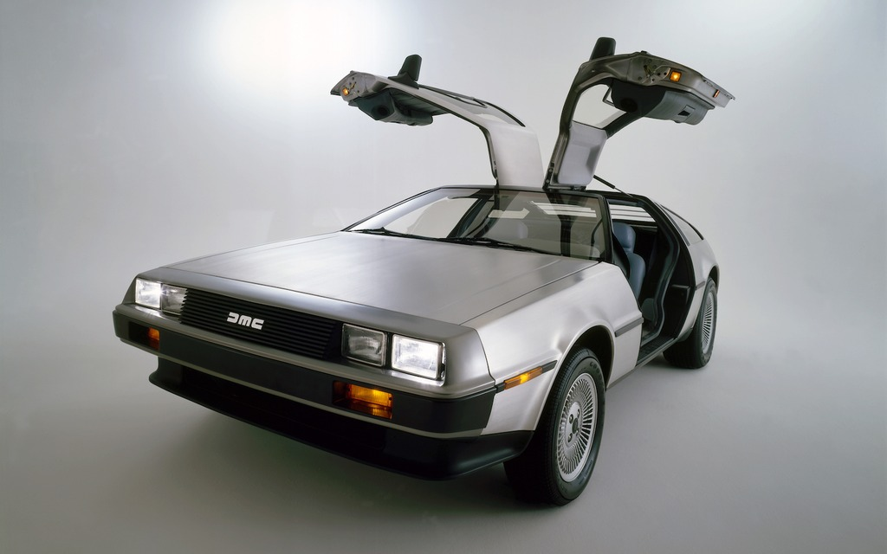
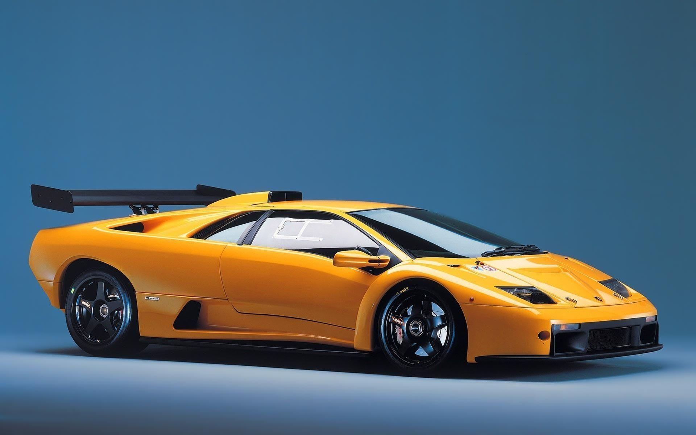
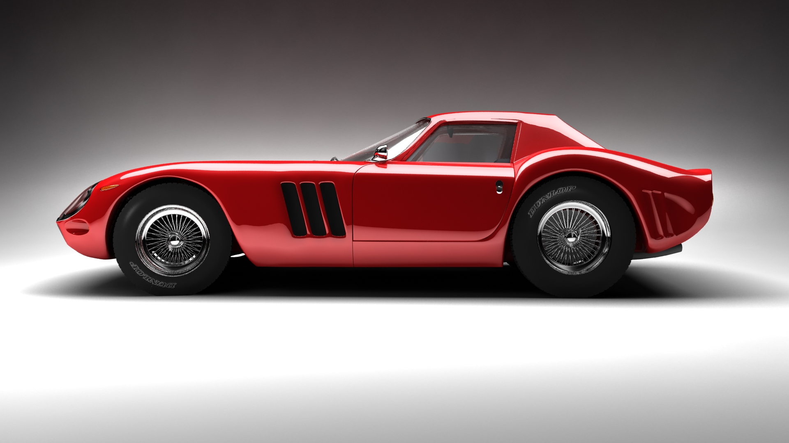
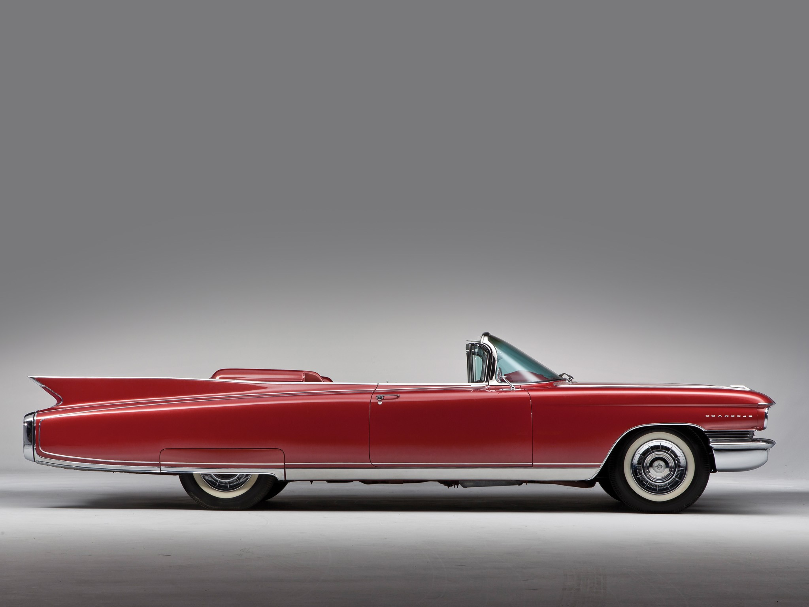

.gif)

Ford Mustang (first generation)
he first-generation Ford Mustang was manufactured by Ford from March 1964 until 1973. The introduction of the Mustang created a new class of automobile known as the pony car. The Mustang’s styling, with its long hood and short deck, proved wildly popular and inspired a host of competition.
It was initially introduced on April 17, 1964, as a hardtop and convertible with the fastback version put on sale in August 1964. At the time of its introduction, the Mustang, sharing its platform with the Falcon, was slotted into a compact car segment.
With each revision, the Mustang saw an increase in overall dimensions and in engine power. The 1971 model saw a drastic redesign to its predecessors. After an initial surge, sales were steadily declining, as Ford began working on a new generation Mustang. With the onset of the 1973 oil crisis, Ford was prepared, having already designed the smaller Mustang II for the 1974 model year. This new car had no common components with preceding models.
Porsche 911
The Porsche 911 represents vintage driving at its best—particularly during the golden era before the car's 1974 redesign. "There's magic in the early 911," Hagerty says. "It's an amazingly well-built machine that delivers one of the most honest driving experiences of any sports car ever built." Even by today's standards, first-generation 911s still have plenty of horsepower and can hold their own on the track. You can find one, even in mint condition, on eBay.
The original Porsche 911 (pronounced nine eleven, German: Neunelfer) is a luxury sports car made by Porsche AG of Stuttgart, Germany. A prototype of the famous, distinctive, and durable design was shown to the public in autumn 1963.[2] Production began in September 1964 and continued through 1989. It was succeeded by a modified version, internally referred to as Porsche 964 but still sold as Porsche 911, as are current models.
DMC DeLorean
The DMC DeLorean (often referred to as the "DeLorean") is a rear-engine, two-door, two-passenger sports car manufactured and marketed by John DeLorean's DeLorean Motor Company (DMC) for the American market from 1981 to 1983—ultimately the only car brought to market by the fledgling company. Designed by Giorgetto Giugiaro and noted for its gull-wing doors and brushed stainless-steel outer body panels, the sports car was also noted for a lack of power and performance incongruous with its looks and price. Though its production was short-lived, the car became widely known when featured as the time machine in the Back to the Future media franchise.
With the first production car completed on January 21, 1981, the design incorporated numerous minor revisions to the hood, interior and wheels before production ended in late December 1982, shortly after DMC filed for bankruptcy and after total production reached about 9,000.Despite the car having a reputation for poor build quality and a less-than-satisfying driving experience, the DeLorean continues to have a strong following driven in part by the popularity of the Back to the Future movies. An estimated 6,500 DeLoreans are still on the road.
Lamborghini Diablo
The Lamborghini Diablo is a high-performance mid-engine sports car built by Italian automotive manufacturer Lamborghini between 1990 and 2001. It is the first production Lamborghini capable of attaining a top speed in excess of 320 kilometres per hour (200 mph). After the end of its production run in 2001, the Diablo was replaced by the Lamborghini Murciélago. The name Diablo means "devil" in Spanish.
The Diablo was presented to the public for sale on 21 January 1990. Its power came from a 5.7 L (348 cu in) dual overhead cam, 4 valves per cylinder version of the existing V12 engine and computer-controlled multi-point fuel injection, producing a maximum output of 492 PS (362 kW; 485 hp) and 580 N⋅m (428 lbf⋅ft) of torque. The vehicle could reach 0-100 km/h (62 mph) in about 4.5 seconds, with a top speed of 325 km/h (202 mph). The Diablo was rear-wheel drive and the engine was mid-mounted to aid its weight balance.The Diablo came better equipped than the Countach; standard features included fully adjustable seats and steering wheel, electric windows, an Alpine stereo system, and power steering from 1993 onwards. Anti-lock brakes were not initially available, although they would eventually be used. A few options were available, including a custom-molded driver's seat, remote CD changer and subwoofer, rear spoiler, factory fitted luggage set (priced at $2,600) and an exclusive Breguet clock for the dash (priced at $10,500).
Ferrari 250 GTO
The Ferrari 250 GTO is a GT car produced by Ferrari from 1962 to 1964 for homologation into the FIA's Group 3 Grand Touring Car category. It was powered by Ferrari's Tipo 168/62 Colombo V12 engine.The "250" in its name denotes the displacement in cubic centimeters of each of its cylinders; "GTO" stands for Gran Turismo Omologato, Italian for "Grand Touring Homologated.
Just 36 of the 250 GTOs were manufactured between 1962 and 1964. This includes 33 cars with 1962-63 bodywork (Series I) and three with 1964 (Series II) bodywork similar to the Ferrari 250 LM. Four of the older 1962-1963 (Series I) cars were updated in 1964 with Series II bodies.When new, the 250 GTO cost $18,000 in the United States, with buyers personally approved by Enzo Ferrari and his dealer for North America, Luigi Chinetti.[citation needed] This model has since become highly desired by automobile collectors and sales have repeatedly set price records. The current record for world's most expensive car was set in June 2018 when a 1963 250 GTO (chassis 4153GT) was sold in a private sale for $70 million.
In 2004, Sports Car International placed the 250 GTO eighth on a list of Top Sports Cars of the 1960s, and nominated it the top sports car of all time. Similarly, Motor Trend Classic placed the 250 GTO first on a list of the "Greatest Ferraris of All Time. Popular Mechanics named it the "Hottest Car of All Time.
Cadillac Eldorado
The Cadillac Series 62 Eldorado joined the Oldsmobile 98 Fiesta, and Buick Roadmaster Skylark as top-of-the-line, limited-production specialty convertibles introduced in 1953 by General Motors to promote its design leadership. A special-bodied, low-production convertible (532 units in total), it was the production version of the 1952 El Dorado "Golden Anniversary" concept car. Along with borrowing bumper bullets from the 1951 GM Le Sabre show car, it featured a full assortment of deluxe accessories and introduced the wraparound windshield and a cut-down beltline to Cadillac standard production
The Cadillac Eldorado is a luxury car manufactured and marketed by Cadillac from 1952 to 2002 over twelve generations. The Eldorado was at or near the top of the Cadillac line. The original 1953 Eldorado convertible and the Eldorado Brougham models of 1957–1960 had distinct bodyshells and were the most expensive models that Cadillac offered those years. The Eldorado was never less than second in price after the Cadillac Series 75 limousine until 1966.Starting in 1967 the Eldorado retained its premium position in the Cadillac price structure, but was built in high volumes on a unique two door personal luxury car platform. The Eldorado carried the Fleetwood designation from 1965 through 1972, and was a modern revival of the pre-war Cadillac V-12 and Cadillac V16 roadsters and convertibles.